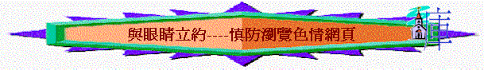

「我與眼睛立約，怎能戀戀瞻望處女呢？」伯31:1
引言
在當時的世代，約伯是一個義人，他完全正直，敬畏神，他更是有家室，有兒有女，應不是一個血氣方剛的少年人，但他不因此而鬆懈，仍然與自己的眼睛立約，不戀戀瞻望處女。今時今日的社會比昔日約伯的時代更複雜，我們今日的眼睛不單是看見不同的異性，我們更可以很方便在互聯網上瀏覽及下載世界各地不同的資訊、圖片、視訊，也可透過網絡世界，與不同的人溝通、相識及有互動視頻交流。
我們的眼睛比起昔日的約伯好像更加忙碌，不停地接收畫面—資訊，但作為信徒，神所揀選聖潔的子民，我們要儆醒小心！因為世界及世界的王—魔鬼撒但會用互聯網的畫面、聲音吸引我們的心，使我們跌倒，使我們陷在沉溺性的罪惡中！
一.現實的情況
有網絡評論員曾作出非正式的估計，現今超過一成的網站是色情網站，而網民下載的內容有三分一是和色情有關的，網民可以透過在自己私人空間下滿足自己眼目的情慾，觀看不同的網上色情小說、圖片、影片，而現在的色情資訊不單可以在標明是色情的網站中得到，更可以在普遍為大眾可以瀏覽的網站中公然討論及交流「性」的資訊，更嚴重的是網民可以很方便在互聯網中進行性交易；即或你不會主動進入這些網站，但只要你打開電腦、手機、電子郵件，一些非常誘惑的情色資料及影像會主動向你招手，主動與你聯繫，耶穌所說的「淫亂的世代」也在這時代中更加突顯！
在2005年的一個調查顯示[1]，在1426名受訪的十至十七歲青少年中，有四成二表示曾瀏覽色情網頁，到了2008年，另一項調查1422中二至中四學生[2]，發現約八成人曾接觸色情資訊，當筆者比較以上兩份調查資料時，發現短短三年時間，接觸情色網的青少年人數比例可以是培增的數，由四成變至八成！我們更有理由相信至2010年，有更多人陷在這情慾的試探中，而且不單是青年人，可能成人接觸的比例會比少年人更多！
二.帶來的危機
在2008年一份調查顯示[3]，若青年人經常接觸色情資訊，他們會比少接觸的更易接受一夜情，而當中有不少人更接受有多於一個性伴侶及可以有集體性行為，所以人若多瀏覽這些不良的網站，他更易被網站中的資訊影響，扭曲了聖經中「性」的正確觀念，也可能有一日模仿入面的內容，作為傷害別人，傷害社會越軌不法的事情。人若繼續沉溺這些資訊，他們可以不斷產生性幻想，及作出噁心的性行為來。
神是聖潔的，所以我們也要聖潔，人若要被神所用，就要脫離卑賤的事情，成為聖潔。若信徒也和世人一樣，也沉溺在這不良的習慣中，我們不單很難得神喜悅，也失去了一種分別為主、尊貴聖潔的身份。筆者也認識不少信徒也陷在這試探中，他們也是有真理的，但情慾一發動起來時，有時他們也不能自拔，被過犯所勝，更引致長期活在自責、內咎、自怨、灰心光景，也因此沒有勇氣承擔事奉，不能坦然親近神，長期活在不快樂光景中。
三.信徒的得勝
我們若在這方面上有軟弱時，如何可以重新站起來，過一個聖潔得勝的生活呢？聖經給我們是有出路的：
1.羔羊的血
「弟兄勝過牠，是因羔羊的血，和自己所見證的道……」啟12：11
一些恐怖電影描繪主角與惡魔爭戰時，往往最後用到「十字架」道具，主角就可以得勝。在現實生活中，或許我們不是有很多巨型木製十字架，但我們有的是更能勝過這些的武器─羔羊的血。每一次來到施恩座前，羔羊的血，仍歷久有果效，任何內咎，控告，也可消除；不知我們最近有否靠羔羊的血勝過，潔淨我們的軟弱呢？
2.父神的道
另外恐佈片的主角往往靠一些神父手執聖經驅魔，但現實中，我們知道聖經對驅邪沒有多大幫助，唯有聖經內神之道使人得勝！如信徒舉神的話語，以神的話語為生活準，那人就可得勝。
3.靠主得勝
「我還有末了的話，你們要靠著主，倚賴他的大能大力，作剛強的人」弗6:10
靠主就是勇敢承認自己是不堪一擊的人，完全放低自己，投靠主，每天向主說聲：「主啊！今天沒有祢，我不能作剛強的人，我不可以沒有祢，求祢幫我不遇見試探，使我得勝。」不知我們每天是否真正的靠主呢？但有時一個人的力量是有限的，我們要與清心禱告主的人一同追求，一同祈禱，筆者偶然會發現一些弟兄主動回到教會中，只作一件事----就是一同為弟兄面對的試探祈禱；若要能得勝軟弱，我們在教會中，嘗試找一些可信任的肢體，與他坦誠分享，一同彼此守望，這真是一個有效得勝之法。
4.決心立約
「我與眼睛立約，怎能戀戀瞻望處女呢？」伯31:1
我們要效法約伯，與眼睛立約，求主幫我們從今以後，不再沾染不潔的網頁。在今年的少年令會中，講員教我們如何面對少年人的私慾，他建議我們可以試用「與眼睛立約」的軟件(可參考www.covenanteyes.com)，這個軟件可以把我們瀏覽過的網站告訴我們預先設定的好友們，如果我們曾進入一些不良的網站，他們會馬上寄出電子告知我們的好友，他們可以提醒及勸勉我們要遠離這些事情了。所以我們若有如此決心，我們身邊的肢體是會幫我們的，神也必會加力給我們，成就祂在我們心裡所生的善工。
5.逃避私慾
我們不要誇口自己能正面面對這些色情的試探，我們也是人，有人的慾念，要勝過這些引誘，其中一個最好的方法就是逃避，如約瑟面對主母的引誘，他面對的方法----就是逃跑！我們也可以用諸般的方法----防止不良資訊侵入我們的世界中：
A.若你已長期沉溺在瀏覽色情網頁站，嘗試減少上網時間，甚至申請一些限制使用量的上網月費計劃
B.若你經常在深夜接觸不良資訊，嘗試立志早些睡覺（可以與可信任的肢體，互相立約早睡，彼此提醒）。
C.購買一些防毒軟件，有防止進入色情網頁及過濾不良郵件功能，當設定了限制功能，將改動限制的密碼告知可信任的人，自己刻意忘記密碼。
D.在IE視窗內，按網際網絡選項，調較內容警告器功能，提訊的限制（限制進入性題材及過份暴力的網站）。
6.家人幫助
「我兒，要聽你父親的訓誨，不可離棄你母親的法則（或作：指教）；」箴言１：８
作為基督徒的父母，在某程度上我們要尊重子女的私隱權，但聖經也要我們不能忽略作父母的角式，要幫助子女到老不偏離神，要幫他們行在神的法則中，我們可以和子女一同商量，建立共識，一家人在家中建立正確瀏覽網站的習慣，也彼此守望，一同追求聖潔，筆者建議有以下方法：
A.若要用電腦時，盡量打開房門，或在廳中上網，可彼此守望。
B.可以在電腦中安裝如「i Care愛管家」[4]或「Parental
Control Bar」[5]等類似防止接觸不良資訊及互相守望的軟件。
C.在家中有家庭崇拜及祈禱的習慣，可以定時為社會的風氣及信徒的聖潔祈禱。
D.當知道女子真是有接觸過不良網頁時，不要太快的動怒，嘗試與他們好好傾談，明白少年人的慾念與好奇，但仍有真理的立場，一同禱告守望，也勿將孩子的事與其他家長分享，讓孩子在一個互信氣氛下，可以坦誠分享軟弱與挣扎。
E.作為基督徒的父母，自己也要作榜樣，當勸勉孩子要禁戒私慾時自己也要立志，不接觸
色情的資訊，作少年人的榜樣。
約伯能得神喜悅，不是因為他天生是一個正直的人，他是有努力的，他真是與眼睛立約，努力保守自己不犯罪，不玷染不潔，但願我們也一同努力，失敗了也不灰心，靠主的恩典，一同逃避私慾，作聖潔蒙愛的子民。
[1]http://christiantimes.org.hk/Common/Reader/News/ShowNews.jsp?Nid=48008&Pid=5&Version=0&Cid=220&Charset=big5_hkscs
[2]明報專訊-2009年7月18日
[3]明報專訊-2009年7月18日
[5]可在http://www.wraac.org/features.html 免費下載